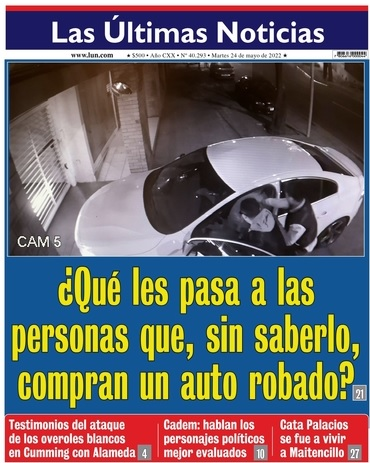

Diarios en Chile
Esta es una págiuna que esta especializadaen mostrar los diarios mas
importantes del Pais, informando asio a la comuinidad sobre las nuevas
noticias a nivel deportivo, cultural, politico y social.
| Emol | |
|
Desalojos en Meiggs: Gremios piden que "continúe en el tiempo" y autoridades destacan "valoración de la ciudadanía" La madrugada del viernes pasado se vivió un hecho anhelado por decenas de vecinos, comerciantes establecidos y transeúntes de la zona de barrio Meiggs: en un intento de erradicar el comercio irregular, personal de carabineros y de los municipios de Santiago y Estación central retiraron los toldos azules que los vendedores ambulantes han instalado en la zona. |
Lun |
|  |
¿Que les pasa a las personas, que sin saberlo, compran un auto robado? La madrugada del viernes pasado se vivió un hecho anhelado por decenas de vecinos, comerciantes establecidos y transeúntes de la zona de barrio Meiggs: en un intento de erradicar el comercio irregular, personal de carabineros y de los municipios de Santiago y Estación central retiraron los toldos azules que los vendedores ambulantes han instalado en la zona. |